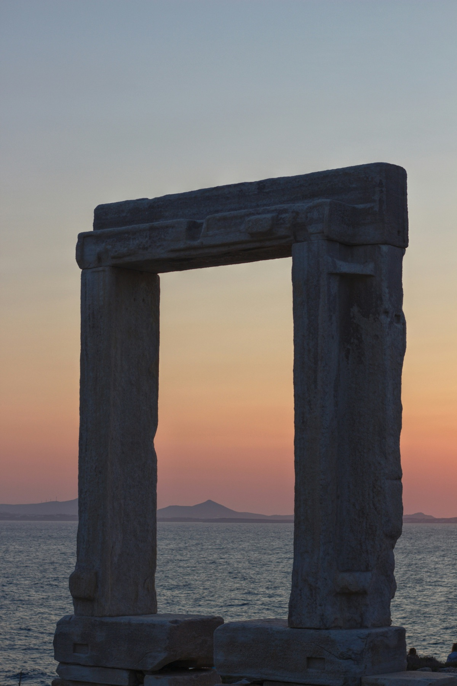
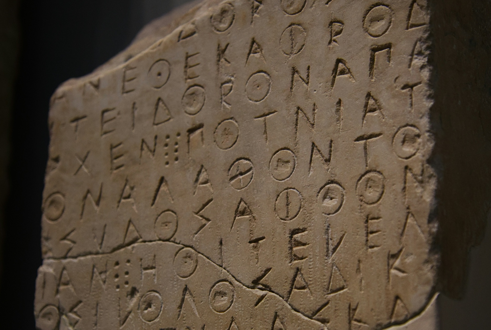

CIVIS Blended Intensive Programme 2026–2027
An interdisciplinary study of language change, with a focus on ancient and medieval European languages and a contrastive approach. Taught online and on the island of Naxos by colleagues from universities of the CIVIS European University Alliance.
Phase 1
Monday 5 – Friday 9 April 2027
Phase 2
Physical mobility, Monday 5 – Friday 9 July 2027 (arrival Sunday 4 July)
ECTS credits
CIVIS universities in the course team
online days, then five days on Naxos
phases: online in April, on Naxos in July
Short lectures and guided practice with colleagues in Athens, Madrid, Tübingen, Rome, Glasgow, Bucharest, Stockholm and Salzburg, with students from across the CIVIS alliance.
Language change studied across centuries and families, with corpora, digital tools and contrastive analysis.
The online week, built around hands-on practice, leads into the Naxos Summer School on Diachronic Linguistics, 4–9 July 2027, in the Ursuline School inside the Venetian Castle of Chora.
Course coordinators at CIVIS universities. Roles and affiliations
National and Kapodistrian University of Athens
Universidad Autónoma de Madrid
University of Tübingen
Sapienza University of Rome
University of Glasgow
Institute of Linguistics “Iorgu Iordan – Al. Rosetti”, Romanian Academy, Bucharest
University of Bucharest
Stockholm University
University of Salzburg
Fewer lectures this year and more practice. The list grows as lecturers confirm.
Universidad Autónoma de Madrid
Profesora Ayudante Doctora (Assistant Professor), Department of Classical Philology. Online lecture: collocations from a diachronic perspective
Stockholm University
Professor of General Linguistics, Department of Linguistics; Secretary and Conference Manager, Association for Linguistic Typology. Online lecture, day to be set

The 2027 student call ran on the CIVIS Agora platform from 1 to 31 October 2026 and has closed. Two ways forward: